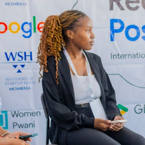

AI/ML Engineer · Researcher · Biomedical Engineer
I'm an AI/ML engineer with a dual foundation in Biomedical Engineering and artificial intelligence, specialising in multimodal data fusion, RAG systems, and omics-integrated machine learning for disease research. Currently contributing to the Fedora Project.

About Me
I hold a B.Tech in Biomedical Engineering from the Technical University of Mombasa and have completed advanced training in Data Science, AI & ML at LuxDevHQ, Nairobi.
My work sits at the intersection of biological domain knowledge and engineering discipline — building production-ready AI systems that span RAG architectures, deep generative models, omics-integrated ML, and containerised deployment.
I bring rare cross-disciplinary fluency: I understand the biology and can build the pipelines. From CNN-based neuroimaging classifiers to multimodal cancer analysis fusing genomics and imaging, my projects reflect a commitment to reproducible, open science.
I'm based in Nairobi, Kenya.
Certifications & Affiliations
Tech4Dev · Certified
LuxDevHQ, Nairobi · June – Nov 2025
containers/ramalama · Outreachy 2026
Technical University of Mombasa · Dec 2025
Technical Expertise
Work History
LuxDevHQ · Nairobi, Kenya
containers/ramalama · Fedora Project (Outreachy Contribution Phase)
GitHub Portfolio
Complete end-to-end RAG system using LLMs to retrieve and synthesise information from health-domain documents. Reduced document query time by ~60% using vector retrieval with semantic embeddings.
End-to-end RAG project with travel and tourism context — full pipeline with REST API, document ingestion, and LLM-powered retrieval.
Developing a multimodal ML model jointly learning from medical imaging data and genomic/omics profiles. Implements modality-specific encoders with attention-based late fusion for cross-modal interactions.
CNN classifier achieving >90% accuracy distinguishing healthy from tumorous brain MRI scans. Applied transfer learning and data augmentation, improving sensitivity on the minority class by ~18%.
CNN model classifying benign vs. malignant skin tumour images from dermoscopy data. Open-sourced under GNU Affero GPL v3.0, reflecting a commitment to reproducible, shared science.
ML model using Binance data to predict whether a person should buy, hold, or sell — time-series and classification pipeline for financial decision support.
Predicts whether to buy or sell on Binance — standalone classifier project with full preprocessing and model evaluation pipeline.
Reusable sentence and document embedding library for semantic search and recommendation, serving as the retrieval backbone for two downstream RAG projects.
Project to convert words into embeddings and store them in a vector database — foundational vector storage and retrieval work underpinning RAG systems.
Exploration of LLM-based embedding strategies for downstream NLP tasks, semantic search, and retrieval-augmented generation.
CNN-based image classification project for environmental waste categorisation — applied computer vision for sustainability.
Focuses on Docling OCR — using the Docling CLI to parse multilingual scanned documents into structured formats (markdown or JSON) before translation.
Parses PDF format into other formats such as HTML, markdown, and JSON using the Docling command-line interface — a key tool in the Outreachy Fedora RAG pipeline.
Repo where RamaLama is used to run AI models locally — practical experimentation with the SLM/LLM serving pipeline central to the Fedora Outreachy project.
End-to-end customer prediction pipeline — full ML lifecycle from data ingestion, feature engineering, model training to evaluation and deployment.
Sales forecasting model with full deployment pipeline — includes model serialisation, API wrapping, and production-ready containerised inference.
Python script to fetch and print the HTTP status codes for a list of URLs from a CSV file — URL health-check automation utility.
JavaScript script to manipulate a JSON object and print it in a human-legible format — foundational data transformation and formatting task.
Academic Background
Graduated December 2025
Technical University of Mombasa, Kenya
Bioinformatics · Signal Processing · Medical Imaging · Biostatistics · Machine Learning · Artificial Intelligence · Bayesian Statistics · Computational Neuroscience
June – November 2025
LuxDevHQ, Nairobi, Kenya
Data Analytics · Machine Learning · Deep Learning · Bayesian & Frequentist Statistics · RAG Systems · Cloud Computing with AWS/GCP
Tech4Dev · Certified
Tech4Dev
Full software development training covering modern development practices, tools, and industry-ready programming skills.
March – April 2026
Outreachy 2026 · Fedora Project / Red Hat
containers/ramalama · SLM/LLM using RamaLama RAG · Merged PRs · DCO sign-off · International async collaboration
Get in Touch
I'm open to research collaborations, full-time roles, and open source projects at the intersection of AI/ML and biomedical science. Based in Nairobi, open to relocation to Seattle, WA, and eligible for visa sponsorship.
NJK